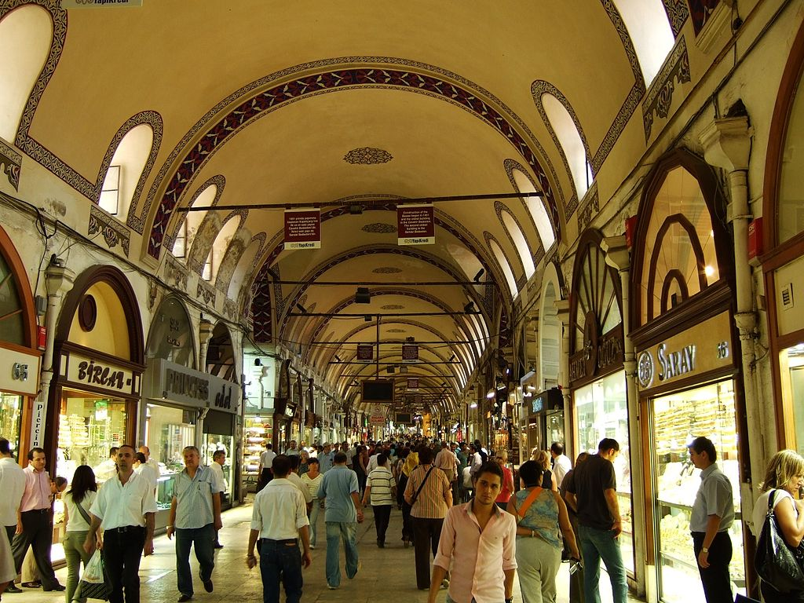
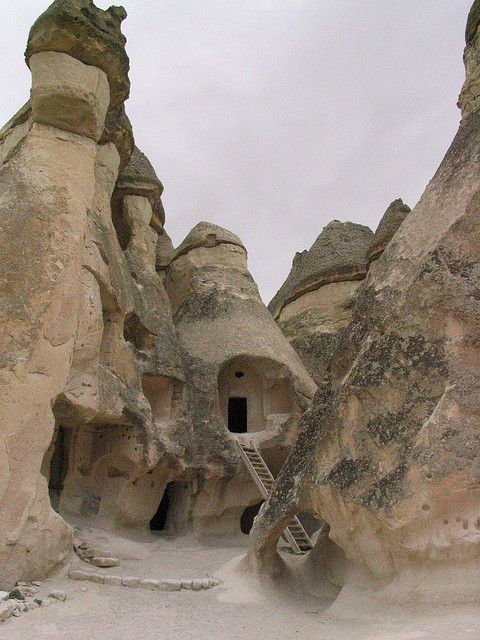

Le grand bazar (Kapalı çarşı) est un dédale de couloirs couverts (le grand bazar s'étend sur plusieurs hectares et est une véritable enclave dans la ville) dont toutes les allées sont bordées de boutiques, le bazar était autrefois le marchétypique turc. Aujourd’hui, les quelque 3 000 boutiques sont devenues touristiques et les Turcs s'y rendent souvent[réf. nécessaire]. Le musée archéologique d'Istanbul (Arkeoloji Müzesi) : Collections retraçant l'histoire de l'Orient (Babylone, Perse, Sidon), bas-reliefs de la porte d'Ishtar, le sarcophage des Pleureuses, le sarcophage d'Alexandre le Grand et le kiosque en faïences. Le musée fut inauguré en 1891.

La citerne basilique (Yerebatan sarnıcı) : Elle date de 527 et a été conçue pour fournir de l'eau potable au palais impérial byzantin. Saint-Sauveur-in-Chora Saint-Sauveur-in-Chora (Kariye camii ou Kariye kilisesi) : Cette église, convertie en mosquée au xvie siècle par les Ottomans, est considérée comme l'un des plus beaux exemples d’église byzantine. Elle est située dans le district stambouliote occidental d’Edirnekapı. Elle est devenue un musée en 1948 (Kariye müzesi en turc). L’intérieur est couvert de fines mosaïques et de fresques. Mosquée d'Ortaköy : La mosquée d'Ortaköy (de son nom officiel Büyük Mecidiye Camii) est une mosquée d'Istanbul, dans le quartier d'Ortaköy. Située au bord du Bosphore, elle a été construite en style néobaroque pour le sultan Abdülmecit Ier en 1854-1855. Les architectes étaient les arméniens Garabet Amira Balyan et son fils Nikogos Balyan.De 1970 à 1973, le pont du Bosphore fut édifié à proximité et forme aujourd'hui un arrière-plan insolite.
Pamukkale se trouve au sud-ouest de la Turquie, plus précisément dans la vallée du fleuve Méandre, dans la province de Denizli, à quinze kilomètres au nord-est de la ville du même nom.
Le site est également intéressant d'un point de vue archéologique. Fondée au iie siècle av. J.-C. par un des rois de Pergame, la cité antique de Hiérapolis se développa grâce à l'exploitation de ses sources thermales. Hiéra était le nom de la femme de Télèphe, fondateur légendaire de Pergame. Cependant, ce sont les Romains qui construisirent le plus grand nombre de bâtiments, avant que la ville ne soit complètement reconstruite à la suite d'un violent séisme en 60. La ville était dédiée au dieu Apollon, ainsi qu'au dieu Pluton qui avait un oracle dans les sous-sols du temple d'Apollon. Au nord du site se trouve la nécropole, les thermes et la porte de Domitien, bel arc de triomphe à trois baies flanqué de deux grosses tours rondes. La nécropole compte plus de 1 200 tombes de différentes époques, puisqu'on y retrouve des tumuli circulaires, mais aussi des tombes grecques recouvertes de graffitis et des tombes d'époque romaine. Le tombeau de saint Philippe aurait, selon certaines sources[Lesquelles ?], été retrouvé sur le site, près du martyrium du même nom, fin juillet 2011. La piscine thermale est toujours exploitée. Elle a été baptisée « piscine de Cléopâtre » par Marc Antoine en l'honneur de cette dernière qui s'y était baignée une fois et aurait fait venir cette eau jusqu'à Rome ensuite, par convois. L'eau est naturellement chaude à 36 °C et par endroits très pétillante. Elle est censée rajeunir et guérir de certaines maladies et infections
Antiquité Province romaine vers 120. La Cappadoce est intégrée à l'Empire des Hittites au IIe millénaire av. J.-C. : ils y établissent leur capitale Hattusha (actuelle Boğazkale, mieux connue sous son nom antérieur Boğazköy, parfois noté avec l'orthographe francisée Boghaz Keui). La région est alors une zone traditionnelle de commerce avec les Assyriens, à cause de ses mines (or, argent, cuivre), comme l'attestent notamment les très nombreuses tablettes en cunéiforme découvertes sur le site de la ville hittite de Kanesh (actuellement Kültepe) ; la région, alors habitée par les Louvites, apparaît sur certaines tablettes sous la dénomination de Kitsuvatna1. Vers 1200 av. J.-C., l'Empire hittite s'écroule, envahi par les Peuples de la mer et les Phrygiens. Vers 1100 av. J.-C., la Cappadoce est conquise par le roi assyrien Téglath-Phalasar Ier. Au ixe siècle av. J.-C., elle est reprise par les Phrygiens, puis est dominée par la Lydie à partir de 696 av. J.-C. Viennent ensuite les Mèdes (au nord-est) et les Cimmériens (au sud-ouest), qui font quelques incursions dans le reste du pays dans les années 650--630. En 546 av. J.-C., la Cappadoce est conquise par Cyrus le Grand et intègre l'Empire perse. À la fin du vie siècle av. J.-C., Darius l'inclut dans la troisième satrapie. L'Asie Mineure aux iie et ier siècles av. J.-C. Les Perses appellent le pays Katpatuka (« pays des chevaux de race », étymologie douteuse d'autant que la région n'a jamais été réputée pour ses chevaux. Le chercheur Olivier Casabone (IFEA 2016) suggère la transcription de Katpatuka en « pays des plaines d'en bas »), dont dérive directement le toponyme « Cappadoce » ; les Grecs, quant à eux, donnent aux Cappadociens le nom de « Syriens blancs » (Λευκόσυροι). Bien que vassale de l'Empire perse, la Cappadoce continue à être gouvernée par ses propres dirigeants, organisés en une aristocratie de type féodal. En 330 av. J.-C., elle devient indépendante sous le roi Ariarathe Ier, qui reconnaît symboliquement la suzeraineté d'Alexandre le Grand et fonde une dynastie. Sous Ariarathe IV ont lieu les premiers contacts avec Rome. La Cappadoce devient alors l'alliée des Romains contre les Séleucides, mais elle est vaincue. Suit une période confuse, au terme de laquelle la dynastie d'Ariarathe disparaît dans les guerres contre le royaume du Pont. En 92 av. J.-C., Rome vient au secours du royaume de Cappadoce pour repousser le roi du Pont Mithridate VI, qui s'en était emparé, et rétablir le pouvoir d'Ariobarzane Ier, appelé par les Grecs Philoromaios (« ami des Romains »). La Cappadoce, avec opportunisme, soutient successivement Pompée, Jules César, Marc Antoine et enfin Octave. En 17, par suite de la disgrâce du roi Archélaos, la Cappadoce est intégrée par Tibère à l'Empire romain, dont elle devient une province impériale, à laquelle sont bientôt incorporées les régions du Pont et de l'Arménie Mineure. Au ive siècle, la province est amputée de ces territoires par les réformes de Dioclétien et Constantin. Sous la domination romaine, la région s’hellénise et se christianise : au cours des années 48 à 58, saint Paul longe ou traverse le pays au cours de ses trois voyages. Le christianisme s'y répand aux iiie et ive siècles, malgré les persécutions de Dioclétien de 303-304, dont Eusèbe de Césarée est le témoin2. Dans la seconde moitié du ive siècle, sous l'impulsion de Basile, évêque de Césarée (Kayseri), de nombreuses petites communautés monastiques s'implantent dans la région. Basile s'oppose à l'arianisme qui est alors en plein essor et qui a les faveurs de l'empereur Valens. Pour affaiblir l'autorité de Basile, Valens divise la Cappadoce en 371, détachant d'elle un vaste territoire dont il fait la Cappadoce Seconde et dont il confie l'autorité religieuse à un évêque arien (évêché de Tyane, à proximité de l'actuelle Niğde). En 536, Justinien crée l'évêché de Mokissos (actuellement Kırşehir) ; basiliques et oratoires se multiplient.
La Basilique Sainte Sophie est un vrai joyaux de l’architecture byzantine, construite en 532 sous le règne de l’empereur Justinien. Le physicien Isidore de Millet et le mathématicien Anthémius de TRALLES réalisèrent le siège du patriarche orthodoxe. Cette impressionnante création vie le jour qu’en seulement 5 année et 10 mois, réalisée par 10.000 artistes – ouvriers qui par leur talent ont sorti du sol un monument gigantesque de 7540 m2, la création venant toujours de l’influence d’ailleurs, ce fabuleux édifice fut inspiré du panthéon de Rome et de l’art primitif occidentale. La Basilique Sainte Sophie sera l’accueil principale des cérémonies impériales, du couronnement des empereurs. Le 27 décembre 537 la divine enfant La Basilique Sainte Sophie d’Istanbul est née. Hagia Sophia veut dire en grec la sagesse divine. Pendant 916 ans la belle Basilique Sainte Sophie d’Istanbul est vêtue du costume d’église, puis changement de costume, pendant 482 ans elle enfilera celui de mosquée et enfin depuis 80 ans l’habit de musée est portée par la belle, déployant tous ses atouts pour conquérir les cœurs des visiteurs.
Des habitations souterraines existaient déjà à l'époque de Xénophon (ve et ive siècles av. J.-C.). Dans l'Anabase, il indique que des gens, en Anatolie, avaient creusé leurs maisons dans le sol et y vivaient dans des espaces suffisamment grands pour y loger leurs familles et leurs animaux et y stocker des vivres1. Certains auteurs font remonter les premières excavations à l'époque hittite (xiiie siècle av. J.-C.), mais il est plus généralement admis que la cité de Derinkuyu date de la domination phrygienne (viiie siècle av. J.-C.)2, et qu'elle fut agrandie progressivement au début de la période byzantine : tout ce qui y a été retrouvé date au plus tôt du ve siècle apr. J.-C.. Les vestiges les plus récents sont du xe siècle. La cité servit de refuge aux premiers chrétiens grecs, face aux persécutions de l'Empire romain3 (édit de Dioclétien en 303) et, à partir du viie siècle, face aux persécutions des clans des Omeyyades et des Abbassides. Pendant des années, Derinkuyu a été un refuge pour les chrétiens orthodoxe de la région contre le gouvernement turc ottoman. Des preuves archéologiques ont montré qu’elle était encore en activité au 20eme siècle pour fuir les vagues de persécutions ottomanes. En cas de besoin pour survivre aux turcs, les habitants pouvaient être évacués vers l’une des 200 autres villes souterraines découvertes dans la région, unies entre elles par un complexe de tunnels. La Turquie nationaliste de Ataturk ayant expulsé les chrétiens grecs orthodoxes vers la Grèce en 1923, ces abris ont été abandonnés, oubliés par les habitants musulmans sunnite de la région qui ne connaissaient pas leur entrée4. L'entrée a été accidentellement découverte en 1963, lorsqu'un habitant du lieu eut démoli un mur dans son sous-sol afin d'agrandir sa demeure. Elle fut ouverte aux visiteurs en 1969, mais 10 % seulement de la cité leur sont accessibles. Les huit étages dégagés à ce jour atteignent une profondeur d'environ 85 mètres.
La Mosquée bleue, mosquée du sultan Ahmet ou mosquée Sultanahmet (en turc Sultan Ahmet Camii ou Sultanahmet Camii) est l'une des mosquées historiques d'Istanbul. Elle est notamment connue pour les céramiques à dominante bleue qui ornent les murs intérieurs, et lui ont valu son nom en Europe. Elle fut construite entre 1609 et 1616, sous le règne du sultan Ahmet Ier. Comme beaucoup d'autres mosquées, elle comporte également la tombe du fondateur, une médersa et un hospice. La mosquée Sultanahmet est devenue l'une des attractions touristiques les plus populaires d'Istanbul. Elle fut un point de départ du pèlerinage à La Mecque et a le privilège de comporter six minarets : la Mosquée sacrée de La Mecque en comptait autant à l'époque, mais en a depuis reçu un septième.
Le Timsah Arena (timsah signifie "crocodile" en turc) est un nouveau stade de football situé à Bursa, en Turquie. Il sera le nouveau domicile de Bursaspor et remplacera le domicile actuel du club, le stade Bursa Atatürk. Il aura une capacité totale de 44016 spectateurs et les tribunes pourront être totalement couvertes. Le Timsah Arena est le stade le plus original actuellement en construction. En turc, «timsah» signifiant crocodile, l’arène en a la forme et la couleur verte. L’entrée des 44016 spectateurs se fera par la gueule ouverte de l’animal. Sa construction coûtera 75 millions d’euros. Côté chiffres, le chantier a débuté en juin 2011, avec une inauguration estimée dans un premier temps en 2013. Mais pour des raisons techniques, les travaux avaient pris énormément de retard. Le stade a une capacité de 44016 places, accompagné de 72 loges de 10 à 30 places, d'un parking souterrain de 640 places + 1 500 sur un parking annexe. Le stade compte également 35 restaurants, 789 sanitaires, et 90 portes d'accès aux tribunes.
| langue | turk |
| capital | ankara | superficie | 783 562 km2 |
| population | 82 835 090 | densité | 106 hab/km2 |